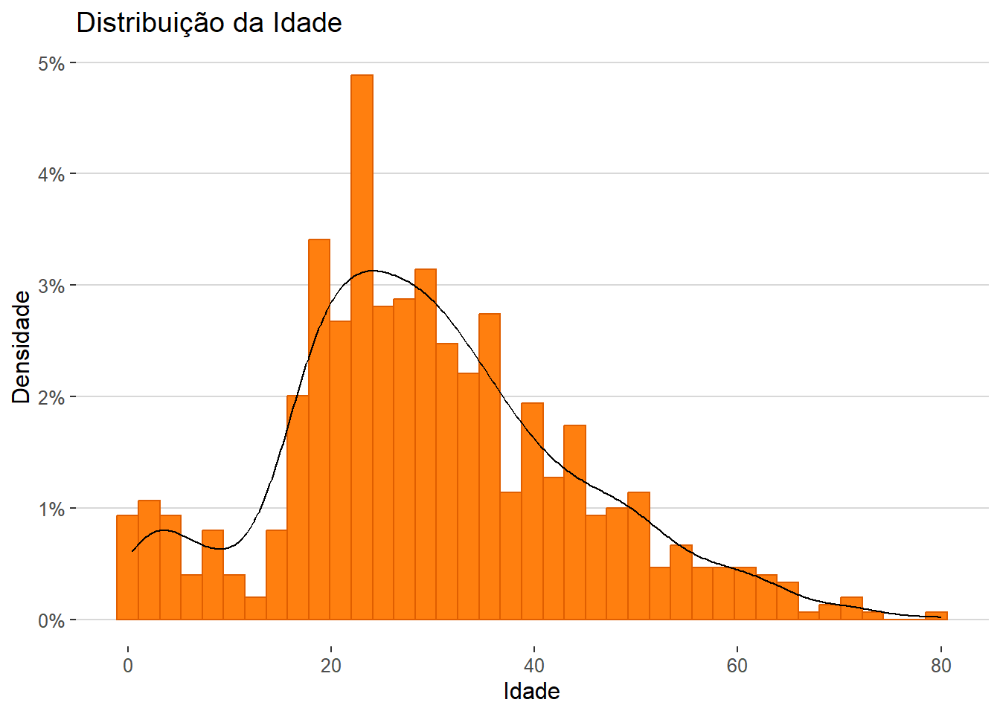

import pandas as pd
import numpy as np
from sklearn.preprocessing import OneHotEncoder
from sklearn.compose import make_column_transformer
from sklearn.model_selection import train_test_split
from sklearn.linear_model import LogisticRegression
from sklearn.metrics import mean_absolute_errorPrevendo sobreviventes do Titanic
Machine learning com abordagem cíclica
Resumo
Este projeto tem como objetivo prever os sobreviventes do naufrágio do Titanic utilizando técnicas de machine learning e uma abordagem cíclica. Utilizo as linguagens Python, R e o ambiente de desenvolvimento Quarto. Essa iniciativa faz parte de um projeto de aprendizado proposto pela EstatMG, a empresa júnior de estatística da UFMG, na qual sou membro ativo.
1 Definição do problema
Os dados fornecidos no site Kaggle, consistem em dois conjuntos: o arquivo train.csv contém informações detalhadas sobre uma parte dos passageiros a bordo do Titanic, incluindo se eles sobreviveram ou não, enquanto o arquivo test.csv possui informações semelhantes, porém não revela se os passageiros sobreviveram.
O objetivo central do projeto é utilizar modelos de machine learning para prever se os 418 passageiros presentes no conjunto test.csv sobreviveram ao desastre. Trata-se de um problema de classificação binária, onde a variável alvo é a sobrevivência (0 = não sobreviveu, 1 = sobreviveu).
Ao longo do processo, são empregadas etapas essenciais de um pipeline de machine learning, como pré-processamento dos dados, seleção de recursos relevantes, treinamento de modelos, ajuste de hiperparâmetros e avaliação do desempenho.
1.1 Importando pacotes e trains
1.1.1 Pacotes
Python
R
library(reticulate)
library(tidyverse)
library(ggthemes)
library(gridExtra)
library(GGally)1.1.2 Dados
train = pd.read_csv('data/train.csv')
test = pd.read_csv('data/test.csv')1.2 Visão geral sobre o banco
train.head().style| PassengerId | Survived | Pclass | Name | Sex | Age | SibSp | Parch | Ticket | Fare | Cabin | Embarked | |
|---|---|---|---|---|---|---|---|---|---|---|---|---|
| 0 | 1 | 0 | 3 | Braund, Mr. Owen Harris | male | 22.000000 | 1 | 0 | A/5 21171 | 7.250000 | nan | S |
| 1 | 2 | 1 | 1 | Cumings, Mrs. John Bradley (Florence Briggs Thayer) | female | 38.000000 | 1 | 0 | PC 17599 | 71.283300 | C85 | C |
| 2 | 3 | 1 | 3 | Heikkinen, Miss. Laina | female | 26.000000 | 0 | 0 | STON/O2. 3101282 | 7.925000 | nan | S |
| 3 | 4 | 1 | 1 | Futrelle, Mrs. Jacques Heath (Lily May Peel) | female | 35.000000 | 1 | 0 | 113803 | 53.100000 | C123 | S |
| 4 | 5 | 0 | 3 | Allen, Mr. William Henry | male | 35.000000 | 0 | 0 | 373450 | 8.050000 | nan | S |
test.head().style| PassengerId | Pclass | Name | Sex | Age | SibSp | Parch | Ticket | Fare | Cabin | Embarked | |
|---|---|---|---|---|---|---|---|---|---|---|---|
| 0 | 892 | 3 | Kelly, Mr. James | male | 34.500000 | 0 | 0 | 330911 | 7.829200 | nan | Q |
| 1 | 893 | 3 | Wilkes, Mrs. James (Ellen Needs) | female | 47.000000 | 1 | 0 | 363272 | 7.000000 | nan | S |
| 2 | 894 | 2 | Myles, Mr. Thomas Francis | male | 62.000000 | 0 | 0 | 240276 | 9.687500 | nan | Q |
| 3 | 895 | 3 | Wirz, Mr. Albert | male | 27.000000 | 0 | 0 | 315154 | 8.662500 | nan | S |
| 4 | 896 | 3 | Hirvonen, Mrs. Alexander (Helga E Lindqvist) | female | 22.000000 | 1 | 1 | 3101298 | 12.287500 | nan | S |
Nosso banco de dados contém as variáveis:
Categóricas:
- Nominal
- Cabin (cabine)
- Embarked (porto de embarque):
C(Cherbourg), Q(Queenstown), S(Southampton) - Sex:
Female, Male
- Ordinal
- Pclass (classe social e econômica):
1(Alta), 2(Média), 3(Baixa)
- Pclass (classe social e econômica):
Numérica:
- Discreta
- Passenger ID
- SibSp (quantidade de irmãos / cônjuges a bordo do Titanic)
- Parch (quantidade de pais / crianças a bordo do Titanic)
- Survived:
0(Óbito), 1(Sobrevivente)
- Continua
- Age
- Fare (tarifa)
Texto:
- Ticket (bilhete)
- Name
Código
train = py$train
train$Survived = as.character(train$Survived)
v_age =
ggplot(train) +
geom_histogram(aes(x= Age), bins = 39, col= "#e05e00", fill= "#ff7f0f") +
labs(x= "Idade", y= "") +
theme_hc()
v_fare =
ggplot(train) +
geom_histogram(aes(x= Fare), bins = 20, col= "#e05e00", fill= "#ff7f0f") +
labs(x= "Tarifa", y= "") +
theme_hc()
v_survived =
ggplot(train, aes(x= Survived)) +
geom_bar(fill= c("#ff4e36", "#ff7f0f")) +
labs(x= "Sobreviventes", y= "") +
scale_x_discrete(labels = c("Não", "Sim")) +
geom_text(aes(label= ..count..), stat = "count", vjust = 2, color = "black", size = 3) +
theme_hc()
v_pclass =
ggplot(train, aes(x= Pclass)) +
geom_bar(fill= c("#ff7f0f", "#ff4e36", "#f9b376")) +
labs(x= "Classe Social", y= "") +
geom_text(aes(label= ..count..), stat = "count", vjust = 2, color = "black", size = 3) +
scale_x_discrete(labels = c("Alta", "Média", "Baixa")) +
theme_hc()
v_sex_survived =
ggplot(train, aes(x= Sex, fill= Survived)) +
geom_bar() +
labs(x= "Sexo", y= "", fill= "Sobreviventes") +
scale_fill_manual(values = c("#ff4e36", "#ff7f0f"),
labels = c("Não", "Sim")) +
scale_x_discrete(labels = c("Feminino", "Masculino")) +
geom_text(stat = "count", aes(label = ..count..),
position = "stack", vjust = 1.5, color = "black", size = 3) +
theme_hc()
#theme(legend.position = "right")
v_pclass_survived =
ggplot(train, aes(x= factor(Pclass), fill= factor(Survived))) +
geom_bar(position = "fill") +
labs(x= "Classe social", y= "", fill= "Sobreviventes") +
scale_fill_manual(values = c("#ff4e36", "#ff7f0f"),
labels = c("Não", "Sim")) +
scale_x_discrete(labels = c("Alta", "Média", "Baixa")) +
scale_y_continuous(labels = scales::percent_format(accuracy = 1)) +
theme_hc()
#theme(legend.position = "b")
v_dist_fare =
ggplot(train, aes(x= Fare, color= factor(Survived))) +
geom_density() +
labs(x= "Tarifa", y= "Densidade", color= "Sobreviventes") +
scale_color_manual(values = c("#ff4e36", "#00b2ff"),
labels = c("Não", "Sim")) +
scale_x_continuous(breaks = c(0, 25, 50, 75 ,100, 200, 300), limits = c(0, 300)) +
theme_hc()
v_dist_age_survived =
ggplot(train, aes(x= Age, color= factor(Survived))) +
geom_density() +
labs(x= "Idade", y= "Densidade", color= "Sobreviventes") +
scale_color_manual(values = c("#ff4e36", "#00b2ff"),
labels = c("Não", "Sim")) +
theme_hc()2 Preparação dos dados
Nesse ciclo vamos:
- Tratar valores ausentes.
- Codificar variáveis categóricas.
- Dividir os dados de treinamento em conjuntos de treinamento e validação para avaliar o desempenho do modelo.
2.1 Tratamento de valores faltantes
As colunas Cabin, Embarked, Fare possuem valores faltantes então preciso trata-las primeiro.
#Função para ver porcentagem dos valores faltantes
def missing_per(data):
#Recebe um dataframe e retorna duas colunas, total absoluto e percentual de valores faltantes
total = data.isnull().sum()
percent = round(data.isnull().sum()/len(data)*100, 2)
return pd.concat([total, percent], axis= 1, keys= ["Total", "%"])
#Função para ver a porcentagem dos valores
def value_per(data, col):
total = data.loc[:, col].value_counts()
percent = round(data.loc[:, col].value_counts(normalize= True)*100, 2)
return pd.concat([total, percent], axis= 1, keys= ["Total", "%"])missing_per(train) Total %
PassengerId 0 0.00
Survived 0 0.00
Pclass 0 0.00
Name 0 0.00
Sex 0 0.00
Age 177 19.87
SibSp 0 0.00
Parch 0 0.00
Ticket 0 0.00
Fare 0 0.00
Cabin 687 77.10
Embarked 2 0.22missing_per(test) Total %
PassengerId 0 0.00
Pclass 0 0.00
Name 0 0.00
Sex 0 0.00
Age 86 20.57
SibSp 0 0.00
Parch 0 0.00
Ticket 0 0.00
Fare 1 0.24
Cabin 327 78.23
Embarked 0 0.00Embarked
Tenho conhecimento que a classe social dos dois passageiros faltantes é 1(alta). Irei ver em qual porto, geralmente, passageiros de classe alta embarcam.
value_per(train, 'Embarked') Total %
S 644 72.44
C 168 18.90
Q 77 8.66value_per(test, 'Embarked') Total %
S 270 64.59
C 102 24.40
Q 46 11.00train[train.Embarked.isnull()] PassengerId Survived Pclass ... Fare Cabin Embarked
61 62 1 1 ... 80.0 B28 NaN
829 830 1 1 ... 80.0 B28 NaN
[2 rows x 12 columns]df_train = read.csv("data/train.csv", na.strings = '')
df_train = df_train[complete.cases(df_train$Embarked), ]
df_test = read.csv("data/test.csv") %>% na.omit()
df_test = df_test[complete.cases(df_test$Embarked), ]
box_train =
ggplot(df_train, aes(x = Embarked, y = Fare, fill = factor(Pclass))) +
geom_boxplot() +
geom_hline(aes(yintercept= 80)) +
labs(title = "train.csv", x = "Embarked", y = "Fare", fill= "Pclass") +
ylim(0,300) +
theme_hc()
box_test =
ggplot(df_test, aes(x = Embarked, y = Fare, fill = factor(Pclass))) +
geom_boxplot() +
geom_hline(aes(yintercept= 80)) +
labs(title = "test.csv", x = "Embarked", y = "Fare", fill= "Pclass") +
ylim(0,300) +
theme_hc()
grid.arrange(box_train, box_test, ncol= 2)
Nos dois datasets, passageiros de classe alta embarcaram no porto C. Nossos passageiros faltantes tem o mesmo valor de tarifa que a mediana da classe alta no porto C. Então vamos definir Porto C para eles.
#Definindo o Porto C para os valores faltantes
train.Embarked.fillna("C", inplace=True)Cabin
A coluna “Cabin” contém muitos valores ausentes. Uma abordagem para preencher esses valores é relacionar a tarifa com a cabine correspondente e utilizar essa informação para estimar os valores faltantes.
#Unindo os DFs
sobreviventes = train.Survived
train.drop(['Survived'],axis= 1, inplace= True)
df = pd.concat([train, test], ignore_index= True)
df.Cabin.fillna("N", inplace= True) #Transformo todos os valores nulos em "N"
df.Cabin = [i[0] for i in df.Cabin] #Pego o primeiro "Char" de cada valor
value_per(df, 'Cabin') Total %
N 1014 77.46
C 94 7.18
B 65 4.97
D 46 3.51
E 41 3.13
A 22 1.68
F 21 1.60
G 5 0.38
T 1 0.08#Agrupar Cabin por Fare
df.groupby('Cabin')['Fare'].mean().sort_values()Cabin
G 14.205000
F 18.079367
N 19.132707
T 35.500000
A 41.244314
D 53.007339
E 54.564634
C 107.926598
B 122.383078
Name: Fare, dtype: float64#Função para determinar cabine para os "N"
def cabin(i):
a = 0
if i<16: #Estou usando a média dos intervalos como base
a = "G"
elif i>=16 and i<27: #35-18 = 17 17/2 = 8.5 18+8.5 = 26.5
a = "F"
elif i>=27 and i<38:
a = "T"
elif i>=38 and i<47:
a = "A"
elif i>= 47 and i<53:
a = "E"
elif i>= 53 and i<54:
a = "D"
elif i>=54 and i<116:
a = 'C'
else:
a = "B"
return a
# Aplicando a with_N
with_n = df[df.Cabin == "N"]
without_n = df[df.Cabin != "N"]
with_n['Cabin'] = with_n.Fare.apply(lambda x: cabin(x))
# Devolvendo os dfs originais
df = pd.concat([with_n, without_n], axis= 0)
df.sort_values(by = 'PassengerId', inplace=True)
train = df[:891]
test = df[891:]
test.reset_index(drop= True, inplace= True)
train['Survived'] = sobreviventesFare
Há apenas um valor faltante em Fare, usarei médias de passageiros com caracteristicas próximas.
test[test.Fare.isnull()] PassengerId Pclass Name Sex ... Ticket Fare Cabin Embarked
152 1044 3 Storey, Mr. Thomas male ... 3701 NaN B S
[1 rows x 11 columns]#Pegando média dos valores para passageiros com caracteristicas proximas a "Mr. Thomas"
valor = test[(test.Pclass == 3) &
(test.Embarked == "S") &
(test.Sex == "male")].Fare.mean()
test.Fare.fillna(valor, inplace=True)missing_per(train) Total %
PassengerId 0 0.00
Pclass 0 0.00
Name 0 0.00
Sex 0 0.00
Age 177 19.87
SibSp 0 0.00
Parch 0 0.00
Ticket 0 0.00
Fare 0 0.00
Cabin 0 0.00
Embarked 0 0.00
Survived 0 0.00missing_per(test) Total %
PassengerId 0 0.00
Pclass 0 0.00
Name 0 0.00
Sex 0 0.00
Age 86 20.57
SibSp 0 0.00
Parch 0 0.00
Ticket 0 0.00
Fare 0 0.00
Cabin 0 0.00
Embarked 0 0.00train.head().style| PassengerId | Pclass | Name | Sex | Age | SibSp | Parch | Ticket | Fare | Cabin | Embarked | Survived | |
|---|---|---|---|---|---|---|---|---|---|---|---|---|
| 0 | 1 | 3 | Braund, Mr. Owen Harris | male | 22.000000 | 1 | 0 | A/5 21171 | 7.250000 | G | S | 0 |
| 1 | 2 | 1 | Cumings, Mrs. John Bradley (Florence Briggs Thayer) | female | 38.000000 | 1 | 0 | PC 17599 | 71.283300 | C | C | 1 |
| 2 | 3 | 3 | Heikkinen, Miss. Laina | female | 26.000000 | 0 | 0 | STON/O2. 3101282 | 7.925000 | G | S | 1 |
| 3 | 4 | 1 | Futrelle, Mrs. Jacques Heath (Lily May Peel) | female | 35.000000 | 1 | 0 | 113803 | 53.100000 | C | S | 1 |
| 4 | 5 | 3 | Allen, Mr. William Henry | male | 35.000000 | 0 | 0 | 373450 | 8.050000 | G | S | 0 |
test.head().style| PassengerId | Pclass | Name | Sex | Age | SibSp | Parch | Ticket | Fare | Cabin | Embarked | |
|---|---|---|---|---|---|---|---|---|---|---|---|
| 0 | 892 | 3 | Kelly, Mr. James | male | 34.500000 | 0 | 0 | 330911 | 7.829200 | G | Q |
| 1 | 893 | 3 | Wilkes, Mrs. James (Ellen Needs) | female | 47.000000 | 1 | 0 | 363272 | 7.000000 | G | S |
| 2 | 894 | 2 | Myles, Mr. Thomas Francis | male | 62.000000 | 0 | 0 | 240276 | 9.687500 | G | Q |
| 3 | 895 | 3 | Wirz, Mr. Albert | male | 27.000000 | 0 | 0 | 315154 | 8.662500 | G | S |
| 4 | 896 | 3 | Hirvonen, Mrs. Alexander (Helga E Lindqvist) | female | 22.000000 | 1 | 1 | 3101298 | 12.287500 | G | S |
2.2 Codificando variáveis categóricas
Sex, Embarked e Cabin precisam ser convertidas para números.
ohe = OneHotEncoder(sparse_output= False)
def encoder(df, cols):
features_array = ohe.fit_transform(df[cols])
features_labels = np.concatenate(ohe.categories_)
features_df = pd.DataFrame(features_array, columns= features_labels)
return features_df
cols = ['Sex', 'Embarked', 'Cabin']
features_train = encoder(train, cols)
features_test = encoder(test, cols)
train = pd.concat([train, features_train], axis=1)
test = pd.concat([test, features_test], axis=1)train.head().style| PassengerId | Pclass | Name | Sex | Age | SibSp | Parch | Ticket | Fare | Cabin | Embarked | Survived | female | male | C | Q | S | A | B | C | D | E | F | G | T | |
|---|---|---|---|---|---|---|---|---|---|---|---|---|---|---|---|---|---|---|---|---|---|---|---|---|---|
| 0 | 1 | 3 | Braund, Mr. Owen Harris | male | 22.000000 | 1 | 0 | A/5 21171 | 7.250000 | G | S | 0 | 0.000000 | 1.000000 | 0.000000 | 0.000000 | 1.000000 | 0.000000 | 0.000000 | 0.000000 | 0.000000 | 0.000000 | 0.000000 | 1.000000 | 0.000000 |
| 1 | 2 | 1 | Cumings, Mrs. John Bradley (Florence Briggs Thayer) | female | 38.000000 | 1 | 0 | PC 17599 | 71.283300 | C | C | 1 | 1.000000 | 0.000000 | 1.000000 | 0.000000 | 0.000000 | 0.000000 | 0.000000 | 1.000000 | 0.000000 | 0.000000 | 0.000000 | 0.000000 | 0.000000 |
| 2 | 3 | 3 | Heikkinen, Miss. Laina | female | 26.000000 | 0 | 0 | STON/O2. 3101282 | 7.925000 | G | S | 1 | 1.000000 | 0.000000 | 0.000000 | 0.000000 | 1.000000 | 0.000000 | 0.000000 | 0.000000 | 0.000000 | 0.000000 | 0.000000 | 1.000000 | 0.000000 |
| 3 | 4 | 1 | Futrelle, Mrs. Jacques Heath (Lily May Peel) | female | 35.000000 | 1 | 0 | 113803 | 53.100000 | C | S | 1 | 1.000000 | 0.000000 | 0.000000 | 0.000000 | 1.000000 | 0.000000 | 0.000000 | 1.000000 | 0.000000 | 0.000000 | 0.000000 | 0.000000 | 0.000000 |
| 4 | 5 | 3 | Allen, Mr. William Henry | male | 35.000000 | 0 | 0 | 373450 | 8.050000 | G | S | 0 | 0.000000 | 1.000000 | 0.000000 | 0.000000 | 1.000000 | 0.000000 | 0.000000 | 0.000000 | 0.000000 | 0.000000 | 0.000000 | 1.000000 | 0.000000 |
test.head().style| PassengerId | Pclass | Name | Sex | Age | SibSp | Parch | Ticket | Fare | Cabin | Embarked | female | male | C | Q | S | A | B | C | D | E | F | G | T | |
|---|---|---|---|---|---|---|---|---|---|---|---|---|---|---|---|---|---|---|---|---|---|---|---|---|
| 0 | 892 | 3 | Kelly, Mr. James | male | 34.500000 | 0 | 0 | 330911 | 7.829200 | G | Q | 0.000000 | 1.000000 | 0.000000 | 1.000000 | 0.000000 | 0.000000 | 0.000000 | 0.000000 | 0.000000 | 0.000000 | 0.000000 | 1.000000 | 0.000000 |
| 1 | 893 | 3 | Wilkes, Mrs. James (Ellen Needs) | female | 47.000000 | 1 | 0 | 363272 | 7.000000 | G | S | 1.000000 | 0.000000 | 0.000000 | 0.000000 | 1.000000 | 0.000000 | 0.000000 | 0.000000 | 0.000000 | 0.000000 | 0.000000 | 1.000000 | 0.000000 |
| 2 | 894 | 2 | Myles, Mr. Thomas Francis | male | 62.000000 | 0 | 0 | 240276 | 9.687500 | G | Q | 0.000000 | 1.000000 | 0.000000 | 1.000000 | 0.000000 | 0.000000 | 0.000000 | 0.000000 | 0.000000 | 0.000000 | 0.000000 | 1.000000 | 0.000000 |
| 3 | 895 | 3 | Wirz, Mr. Albert | male | 27.000000 | 0 | 0 | 315154 | 8.662500 | G | S | 0.000000 | 1.000000 | 0.000000 | 0.000000 | 1.000000 | 0.000000 | 0.000000 | 0.000000 | 0.000000 | 0.000000 | 0.000000 | 1.000000 | 0.000000 |
| 4 | 896 | 3 | Hirvonen, Mrs. Alexander (Helga E Lindqvist) | female | 22.000000 | 1 | 1 | 3101298 | 12.287500 | G | S | 1.000000 | 0.000000 | 0.000000 | 0.000000 | 1.000000 | 0.000000 | 0.000000 | 0.000000 | 0.000000 | 0.000000 | 0.000000 | 1.000000 | 0.000000 |
2.3 Divisão de treinamento e teste
O código abaixo realiza uma divisão de treinamento e teste, colocando 75% dos dados em um conjunto de treinamento e 25% dos dados em um conjunto de teste. Isso é feito para garantir que nosso algoritmo de classificação seja capaz de generalizar bem para novos dados.
#Removendo colunas
y = train.Survived.copy()
x = train.drop(['Survived', 'PassengerId', 'Name', 'Ticket', 'Age', 'Sex', 'Embarked', 'Cabin'], axis= 1)
#Dividindo
x_train, x_test, y_train, y_test = train_test_split(x, y, test_size= 0.25, random_state= 20)3 Escolha e treinamento do modelo
Por se tratar de classificação binária, usarei como modelo a regressão logística
3.1 Treinamento do Modelo
model_lr = LogisticRegression(solver='lbfgs', max_iter=1000)
model_lr.fit(x_train, y_train) LogisticRegression(max_iter=1000)In a Jupyter environment, please rerun this cell to show the HTML representation or trust the notebook.
On GitHub, the HTML representation is unable to render, please try loading this page with nbviewer.org.
LogisticRegression(max_iter=1000)
#predict
pred = model_lr.predict(x_test)4 Avaliação de desempenho
Usarei o metodo de acurácia para medir o desempenho do modelo
score = model_lr.score(x_test, y_test)
score0.8071748878923767Tivemos uma acurácia de 0.8071749 usando o metodo de train_test_split. Agora iremos usar nosso modelo no banco test.csv para prever os sobreviventes.
4.1 Prevendo ‘test.csv’
Submeterei os resultados do modelo ao site kaggle para obter a quantidade de acertos.
test_id = test.PassengerId.copy()
test_drop = test.drop(['PassengerId', 'Name', 'Ticket', 'Age', 'Sex', 'Embarked', 'Cabin'], axis= 1)
pred = model_lr.predict(test_drop)
submission = pd.DataFrame({"PassengerId": test_id.values, "Survived": pred})
submission.to_csv("data/submission.csv", index= False)5 Refinamento
Vamos melhorar o modelo adicionando Title,Family_size e estimando melhor Age.
Name
Vou criar uma nova variável com os titulos dos passageiros.
train['Title'] = train.Name.str.extract(' ([A-Za-z]+)\.')
test['Title'] = test.Name.str.extract(' ([A-Za-z]+)\.')
value_per(train, 'Title') Total %
Mr 517 58.02
Miss 182 20.43
Mrs 125 14.03
Master 40 4.49
Dr 7 0.79
Rev 6 0.67
Mlle 2 0.22
Major 2 0.22
Col 2 0.22
Countess 1 0.11
Capt 1 0.11
Ms 1 0.11
Sir 1 0.11
Lady 1 0.11
Mme 1 0.11
Don 1 0.11
Jonkheer 1 0.11value_per(test, 'Title') Total %
Mr 240 57.42
Miss 78 18.66
Mrs 72 17.22
Master 21 5.02
Col 2 0.48
Rev 2 0.48
Ms 1 0.24
Dr 1 0.24
Dona 1 0.24Como temos muitos valores com poucas repetições, iremos agrupa-los.
#Train
train['Title'] = train['Title'].replace(
['Lady','Countess','Capt','Col','Don','Dr','Major','Rev','Sir','Jonkheer'], 'Especial')
train['Title'] = train['Title'].replace('Mlle', 'Miss') #Mademoiselle é equivalente a Miss
train['Title'] = train['Title'].replace('Ms', 'Miss')
train['Title'] = train['Title'].replace('Mme', 'Mrs') #Madame é equivalente a Mrs
#Teste
test['Title'] = test['Title'].replace(['Col','Dr','Rev','Dona'], 'Especial')
test['Title'] = test['Title'].replace('Ms', 'Miss')#Codificando
cols = ['Title']
features_train = encoder(train, cols)
features_test = encoder(test, cols)
train = pd.concat([train, features_train], axis=1)
test = pd.concat([test, features_test], axis=1)value_per(train, 'Title') Total %
Mr 517 58.02
Miss 185 20.76
Mrs 126 14.14
Master 40 4.49
Especial 23 2.58value_per(test, 'Title') Total %
Mr 240 57.42
Miss 79 18.90
Mrs 72 17.22
Master 21 5.02
Especial 6 1.44Age
ggplot(train, aes(x= Age)) +
geom_histogram(bins= 39, aes(y = ..density..),col= "#e05e00", fill = "#ff7f0f") +
geom_density(col = "black") +
scale_y_continuous(labels = scales::percent_format()) +
labs(x= "Idade", y= "Densidade", title= "Distribuição da Idade") +
theme_hc()
A idade segue uma distribuição aproximadamente normal, vamos tentar gerar números que segue uma distribuição normal com sua média e variância.
test = py$test
age_train = abs(rnorm(177, mean(train$Age, na.rm = T), sd(train$Age, na.rm = T)))
age_test = abs(rnorm(86, mean(test$Age, na.rm = T), sd(test$Age, na.rm = T)))def dict_age(df, valor):
nan_indices = df[df['Age'].isna()].index.tolist()
nan_valor = valor
nan_dict = dict(zip(nan_indices, nan_valor))
return nan_dict
age_train = dict_age(train, r.age_train)
age_test = dict_age(test, r.age_test)
train.Age.fillna(age_train, inplace= True)
test.Age.fillna(age_test, inplace= True)Family_size
Iremos criar a variável Family_size somando SibSp e Parch
train['Family_size'] = train.SibSp + train.Parch+1
test['Family_size'] = test.SibSp + test.Parch+15.1 Treinamento do modelo refinado
5.1.1 Preparação
train.head().style| PassengerId | Pclass | Name | Sex | Age | SibSp | Parch | Ticket | Fare | Cabin | Embarked | Survived | female | male | C | Q | S | A | B | C | D | E | F | G | T | Title | Especial | Master | Miss | Mr | Mrs | Family_size | |
|---|---|---|---|---|---|---|---|---|---|---|---|---|---|---|---|---|---|---|---|---|---|---|---|---|---|---|---|---|---|---|---|---|
| 0 | 1 | 3 | Braund, Mr. Owen Harris | male | 22.000000 | 1 | 0 | A/5 21171 | 7.250000 | G | S | 0 | 0.000000 | 1.000000 | 0.000000 | 0.000000 | 1.000000 | 0.000000 | 0.000000 | 0.000000 | 0.000000 | 0.000000 | 0.000000 | 1.000000 | 0.000000 | Mr | 0.000000 | 0.000000 | 0.000000 | 1.000000 | 0.000000 | 2 |
| 1 | 2 | 1 | Cumings, Mrs. John Bradley (Florence Briggs Thayer) | female | 38.000000 | 1 | 0 | PC 17599 | 71.283300 | C | C | 1 | 1.000000 | 0.000000 | 1.000000 | 0.000000 | 0.000000 | 0.000000 | 0.000000 | 1.000000 | 0.000000 | 0.000000 | 0.000000 | 0.000000 | 0.000000 | Mrs | 0.000000 | 0.000000 | 0.000000 | 0.000000 | 1.000000 | 2 |
| 2 | 3 | 3 | Heikkinen, Miss. Laina | female | 26.000000 | 0 | 0 | STON/O2. 3101282 | 7.925000 | G | S | 1 | 1.000000 | 0.000000 | 0.000000 | 0.000000 | 1.000000 | 0.000000 | 0.000000 | 0.000000 | 0.000000 | 0.000000 | 0.000000 | 1.000000 | 0.000000 | Miss | 0.000000 | 0.000000 | 1.000000 | 0.000000 | 0.000000 | 1 |
| 3 | 4 | 1 | Futrelle, Mrs. Jacques Heath (Lily May Peel) | female | 35.000000 | 1 | 0 | 113803 | 53.100000 | C | S | 1 | 1.000000 | 0.000000 | 0.000000 | 0.000000 | 1.000000 | 0.000000 | 0.000000 | 1.000000 | 0.000000 | 0.000000 | 0.000000 | 0.000000 | 0.000000 | Mrs | 0.000000 | 0.000000 | 0.000000 | 0.000000 | 1.000000 | 2 |
| 4 | 5 | 3 | Allen, Mr. William Henry | male | 35.000000 | 0 | 0 | 373450 | 8.050000 | G | S | 0 | 0.000000 | 1.000000 | 0.000000 | 0.000000 | 1.000000 | 0.000000 | 0.000000 | 0.000000 | 0.000000 | 0.000000 | 0.000000 | 1.000000 | 0.000000 | Mr | 0.000000 | 0.000000 | 0.000000 | 1.000000 | 0.000000 | 1 |
#Removendo colunas
y = train.Survived.copy()
x = train.drop(
['Survived', 'PassengerId', 'Name', 'Ticket', 'Sex', 'Embarked', 'Cabin', 'Title'], axis=1)
test_id = test.PassengerId.copy()
test_drop = test.drop(
['PassengerId', 'Name', 'Ticket', 'Sex', 'Embarked', 'Cabin', 'Title'], axis= 1)
#Dividindo
x_train, x_test, y_train, y_test = train_test_split(x, y, test_size= 0.25, random_state= 20)5.1.2 Treinamento
model_lr.fit(x_train, y_train) LogisticRegression(max_iter=1000)In a Jupyter environment, please rerun this cell to show the HTML representation or trust the notebook.
On GitHub, the HTML representation is unable to render, please try loading this page with nbviewer.org.
LogisticRegression(max_iter=1000)
#predict
pred = model_lr.predict(x_test)5.1.3 Avaliação
score = model_lr.score(x_test, y_test)
score0.8295964125560538Conseguimos uma melhora na acurácia do modelo, alcançando 0.8295964.
pred = model_lr.predict(test_drop)
submission = pd.DataFrame({"PassengerId": test_id.values, "Survived": pred})
submission.to_csv("data/submission1.csv", index= False)